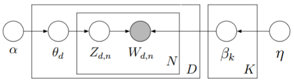

主题模型之LDA(二)
在Gibbs采样算法求解LDA模型中，\alpha,\beta是已知的先验输入，求解的目标得到各个z_{dn},w_{kn}对应的整体\vec{z},\vec{w}的概率分布，即文档主题的分布和主题词的分布。采用Gibbs采样算法求解目标分布时，需要得到对应各个特征维度的条件概率分布。

现在所有文档联合起来形成的词向量\vec{w}是已知的数据，不知道的是语料库主题\vec{z}的分布。假如可以先求出w,z的联合分布p(\vec{w},\vec{z})，进而可以求出某一个词w_i对应主题特征z_i的条件概率分布p(z_i=k|\vec{w},\vec{z}_{-i})。其中\vec{z}_{-i}表示去掉下标i的词后的主题分布。有了条件概率(z_i=k|\vec{w},\vec{z}_{-i}) 就可以进行Gibbs采样。最终在Gibbs采样收敛后得到第i个词的主题。
如果通过采样得到了所有词的主题，那么通过统计所有词的主题计数，就可以得到各个主题的词分布。接着统计各个文档对应词的主题计数，就可以得到各个文档的主题分布。
主题和词的联合分布
对于联合分布p(\vec{w},\vec{z})有：
\begin{align}
p(\vec{w},\vec{z})
& \propto p(\vec{w},\vec{z}|\vec{\alpha},\vec{\eta})\\
&=p(\vec{z}|\vec{\alpha}) p(\vec{w}|\vec{z},\vec{\eta})\\
&= \prod_{d=1}^M p(\vec{z}_d|\vec{\alpha}) \cdot \prod_{k=1}^K p(\vec{w}_k|\vec{z},\vec{\eta})\\
\end{align}
将p(\vec{w},\vec{z}) 分解为p(\vec{z}_d|\vec{\alpha})和p(\vec{w}_k|\vec{z},\vec{\eta})。
为了简化Dirichlet分布的表达式，引入\Delta(\alpha)作为归一化参数。
Dirichlet(\vec{p}|\vec{\alpha})=\frac{\Gamma(\sum_{k=1}^K \alpha_k)}{\prod_{k=1}^K \Gamma(\alpha_k)}\prod_{k=1}^K p_k^{\alpha_k-1}=\frac{1}{\Delta(\vec{\alpha})}\prod_{k=1}^K p_k^{\alpha_k-1}\notag
其中\Delta(\vec{\alpha})=\frac{\prod_{k=1}^K \Gamma(\alpha_k)}{\Gamma(\sum_{k=1}^K \alpha_k)}=\int_{\vec{p}} \prod_{k=1}^K p_k^{\alpha_k-1}d\vec{p}
(1)求解p(\vec{z}_d|\vec{\alpha})
由于\alpha \rightarrow \theta_d \rightarrow \vec{z}_d组成了Dirichlet-Multi共轭，利用这组分布，可以计算p(\vec{z}_d|\vec{\alpha})。
\begin{align}
p(\vec{z}_d|\vec{\alpha})
&=\int p(\vec{z}_d|\vec{\theta}_d)p(\vec{\theta}_d|\vec{\alpha})d_{\vec{\theta}_d}\\
&=\int (\prod_{k=1}^K p_{k}^{n_d^{(k)}}) \cdot (\frac{1}{\Delta(\vec{\alpha})}\prod_{k=1}^K p_k^{\alpha_k-1})d_{\vec{\theta}_d}\\
&=\frac{1}{\Delta(\vec{\alpha})} \int \prod_{k=1}^K p_k^{n_d^{(k)}+\alpha_k-1}d_{\vec{\theta}_d}\\
&=\frac{\Delta(\vec{n}_d+\vec{\alpha})}{\Delta(\vec{\alpha})}
\end{align}
其中n_d^{(k)}表示在第d个文档中，第k个主题词的个数，对应的多项式分布的计数可以表示为
\vec{n}_d=(n_d^{(1)},n_d^{(2)},...,n_d^{(K)}) \notag
(2)求解p(\vec{w}_k|\vec{z},\vec{\eta})
由于\eta \rightarrow \vec{\beta}_k \rightarrow \vec{w}_k组成了Dirichlet-Multi共轭，利用这组分布，可以计算p(\vec{w}_k|\vec{z},\vec{\eta})。
\begin{align}
p(\vec{w}_k|\vec{z},\vec{\eta})
&=\int p(\vec{w}_k|\vec{z},\vec{\beta}_k)p(\vec{\beta}_k|\eta)d_{\vec{\beta}_k}\\
&=\int (\prod_{v=1}^V p_v ^{n_k^{(v)}}) (\frac{1}{\Delta(\vec{\eta})}\prod_{v=1}^Vp_v^{\eta_v-1})d_{\vec{\beta}_k}\\
&=\frac{1}{\Delta(\vec{\eta})}\int \prod_{v=1}^V p_v^{n_k^{(v)}+\eta_v-1}d_{\vec{\beta}_k}\\
&=\frac{\Delta(\vec{n}_k+\vec{\eta})}{\Delta(\vec{\eta})}
\end{align}
其中n_k^{(v)} 表示在第k个主题中，第v个词的个数。对应的多项式分布计数可以表示为：
\vec{n}_k=(\vec{n}_k^{(1)},\vec{n}_k^{(2)},...,\vec{n}_k^{(V)}) \notag
最终得到主题和词的联合分布p(\vec{w},\vec{z})，进一步由式(7)和式(11)推导式(3)有：
\begin{align}
p(\vec{w},\vec{z})
& \propto p(\vec{w},\vec{z}|\vec{\alpha},\vec{\eta})\\
&=p(\vec{z}|\vec{\alpha}) p(\vec{w}|\vec{z},\vec{\eta})\\
&= \prod_{d=1}^M p(\vec{z}_d|\vec{\alpha}) \cdot \prod_{k=1}^K p(\vec{w}_k|\vec{z},\vec{\eta})\\
&= \prod_{d=1}^M \frac{\Delta(\vec{n}_d+\vec{\alpha})}{\Delta(\vec{\alpha})} \prod_{k=1}^K \frac{\Delta(\vec{n}_k+\vec{\eta})}{\Delta(\vec{\eta})}
\end{align}
主题和词的条件分布
有了联合分布，就可以求Gibbs采样算法所需的条件分布即p(z_i=k|\vec{z}_{-i},\vec{w})
\begin{align}
p(z_i=k|\vec{z}_{-i},\vec{w})
&=\frac{p(\vec{w},z_i=k,\vec{z}_{-i})}{p(\vec{w},\vec{z}_{-i})}\\
&=\frac{p(\vec{w},z_i=k,\vec{z}_{-i})}{p(w_i=t,\vec{w}_{-i},\vec{z}_{-i})}\\
&=\frac{p(\vec{w},\vec{z})}{p(\vec{w}_{-i},\vec{z}_{-i}|w_i=t)p(w_i=t)}\\
&=\frac{p(\vec{w},\vec{z})}{p(\vec{w}_{-i},\vec{z}_{-i}|w_i=t)} \cdot \frac{1}{p(w_i=t)}\\
&\propto \frac{p(\vec{w},\vec{z})}{p(\vec{w}_{-i},\vec{z}_{-i})}\\
& =\frac{ \prod_{d=1}^M \frac{\Delta(\vec{n}_d+\vec{\alpha})}{\Delta(\vec{\alpha})} \prod_{k=1}^K \frac{\Delta(\vec{n}_k+\vec{\eta})}{\Delta(\vec{\eta})}}{ \prod_{d=1}^M \frac{\Delta(\vec{n}_{d,-i}+\vec{\alpha})}{\Delta(\vec{\alpha})} \prod_{k=1}^K \frac{\Delta(\vec{n}_{k,-i}+\vec{\eta})}{\Delta(\vec{\eta})}}\\
&=\frac{\Delta(\vec{n}_d+\vec{\alpha}) \cdot \Delta(\vec{n}_k+\vec{\eta}) }{\Delta(\vec{n}_{d,-i}+\vec{\alpha}) \cdot \Delta(\vec{n}_{k,-i}+\vec{\eta})}
\end{align}
式(16)(19)的变换主要利用贝叶斯公式；式(19)(20)由于p(w_i=t)是可观察变量，这里可以将其去掉。所以取了正比例符号；式(20)(21)主要利用式(15)的结论带入进行化简；式(21)(22)变换的核心是去掉了积分\prod符号，原因是这里我们关注的W_{dn}，其他都可以看成是常量所以可以直接约去，进而去掉积分符号。
这里式(22)利用Gamma()函数继续化简，过程较为复杂，可以参考：
（1）《LDA漫游指南》
（2）https://blog.csdn.net/qy20115549/article/details/53575612
最终得到每个词对应主题的Gibbs采样的条件概率公式：
\begin{align}
& p(z_i=k|\vec{z}_{-i},\vec{w})\\
&=\frac{\Delta(\vec{n}_d+\vec{\alpha}) \cdot \Delta(\vec{n}_k+\vec{\eta}) }{\Delta(\vec{n}_{d,-i}+\vec{\alpha}) \cdot \Delta(\vec{n}_{k,-i}+\vec{\eta})}\\
&= \frac{n_{d,-i}^k+\alpha}{\sum_{k=1}^K n_{d,-i}^k+K\cdot\alpha} \cdot \frac{n_{k,-i}^t+\eta}{\sum_{t=1}^V n_{k,-i}^t+V\cdot\eta}
\end{align}
当Gibbs采样收敛后就得到了所有词的采样主题。然后利用所有采样得到的词和主题对应关系，进一步可得到每个文档词主题分布\theta_d和每个主题中所有词的分布\beta_k。
总结
使用Gibbs采样算法训练LDA模型，需要先确定三个超参数K,\vec{\alpha},\vec{\eta}，其中选择一个合适的K尤其关键，这个值一般需要根据实际问题来决定。如果只是简单的语义区分，则较小的K即可；如果是复杂的语义区分，则K需要较大且还需要足够的语料。
由于Gibbs采样很容易并行化，因此可以很方便的使用大数据平台来分布式训练海量文档的LDA模型。